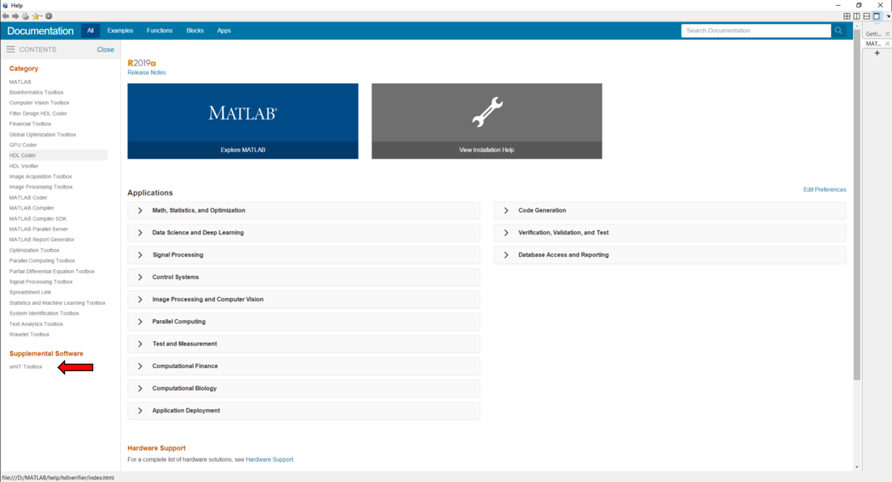

Here is the step by step setup procedure to start using the toolbox. Also, please check the recommended hardware and software here!
First, download the most recent release of umIT:
Next, extract the umIT files and folders to a local folder in your computer.
Note
It is advisable to place the toolbox in a folder that is accessible for all users of the Toolbox in order to avoid duplicate files in your computer!
In order to access our documentation from Matlab's interface, run the function Umitoolbox_setup:
Umitoolbox_setup
Important
You may need administrator permission to create a local documentation. If you do not, the function Umitoolbox_setup will display a warning:
-------------------------------------------------------------------------
Warning: Failed to create local documentation! Try to run MATLAB as admin and rerun this function!
If you do not have admin access, the same documentation is available in the project's wiki page at:
https://s-belanger.github.io/Umit/
-------------------------------------------------------------------------
In this case, the same information is accessed through the project's wiki page!
Now, the toolbox is ready to use and the toolbox documentation is accessible through Matlab's interface. To read the documentation, type in the command window:
doc
The link for umIT's documentation is located under "Supplemental Software" on the bottom-left side of the window:
